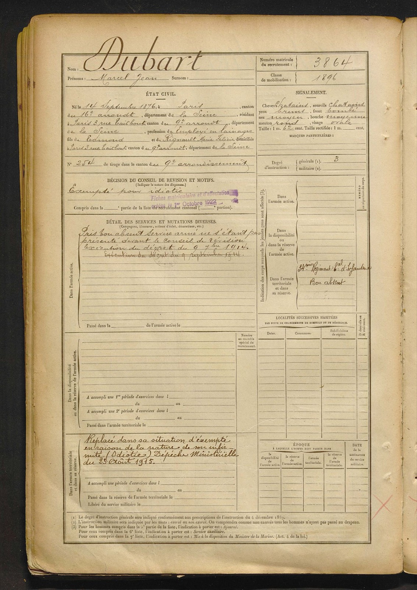

Dossier militaire
Registre matricule du recrutement de la Seine : état signalétique et des services de Marcel Jean Dubart, classe 1896, matricule 3864
Ce document établit
- La fiche matricule de Marcel Jean Dubart (classe 1896, matricule 3864, n° 254 du tirage du 9e arrondissement) le dit né le 14/09/1876 à Paris (16e), fils d'Edmond et de Rignault Marie Félicie vérifié A0824
« « Né le 14 Septembre 1876, à Paris, canton du 16e arrondt, département de la Seine … fils de Edmond et de Rignault Marie Félicie, domiciliés à Paris 3 rue Taitbout, canton du 9e arrondt » »
- À l'époque du recrutement de la classe 1896 (1896-1897), Edmond Dubart et Marie Félicie Rignault demeurent 3 rue Taitbout, Paris 9e, où Marcel Jean est aussi résidant vérifié A0825
« « résidant à Paris 3 rue Taitbout, canton du 9e arrondt … Edmond et … Rignault Marie Félicie, domiciliés à Paris 3 rue Taitbout, canton du 9e arrondt » »
- À l'époque du recrutement de la classe 1896, la profession de Marcel Jean Dubart est « employé en lainages » ; son degré d'instruction générale est noté 3 ; il mesure 1 m 62 (cheveux et sourcils châtains, yeux bruns, front bombé, nez et bouche moyens, menton rond, visage ovale) vérifié A0826
« « profession d'Employé en lainages » ; « Degré d'instruction : générale 3 » ; « Taille : 1 m 62 cent. » »
- La fiche porte, comme décision du conseil de révision, « Exempté pour idiotie », puis l'annotation « Pris bon absent service armé ne s'étant pas présenté devant le conseil de révision. Exécution du décret du 9 7bre 1914 » ; elle ne mentionne pas son décès de 1899 vérifié A0827
« « Décision du conseil de révision et motifs : Exempté pour idiotie » ; « Détail des services : Pris bon absent service armé ne s'étant pas présenté devant le conseil de révision. Exécution du décret du 9 7bre 1914 » »
Ce document contredit
- Hypothèse : Marcel faisait son service militaire à Tours en 1899. contredit A0023
« « Décision du conseil de révision et motifs : Exempté pour idiotie » ; « Pris bon absent service armé ne s'étant pas présenté devant le conseil de révision » »
Lire la transcription intégrale : Transcriptions : Edmond DUBART (P5232) →
Personnes concernées
Estampille « Fiches matricule et d'affectation créées le 1er octobre 1922 » : les mentions d'état civil et de domicile proviennent des opérations de recrutement de la classe 1896 (1896-1897), la fiche est établie ou recopiée en 1922. Une seule image (état civil, signalement, décision, services).